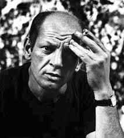
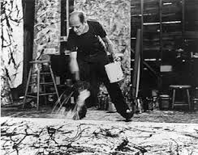

The Life of Jackson Pollock

Jackson Pollock (January 28, 1912 - August 11, 1956), was an influential American painter and a major figure in the abstract expressionist movement. During his lifetime, Pollock enjoyed considerable fame and notoriety. He was regarded as a mostly reclusive artist. He had a volatile personality, and struggled with alcoholism for most of his life. In 1945, he married the artist Lee Krasner, who became an important influence on his career and on his legacy. Pollock died at the age of 44 in an alcohol-related car accident. In December 1956, he was given a memorial retrospective exhibition at the Museum of Modern Art (MoMA) in New York City, and a larger more comprehensive exhibition there in 1967. More recently, in 1998 and 1999, his work was honored with large-scale retrospective exhibitions at MoMA and at The Tate in London.
By the mid 1940s, the art form which Jackson Pollock was most known for, was work he did in the abstract style. And, by 1947, he was doing the 'drip and splash' style, which many believe he introduced to the art world during this time period. Rather than fixing his canvas to an easel, most of his canvases were either set on the floor, or laid out against a wall. From there, he used a style where he would allow the paint to drip from the paint can. Instead of using the traditional paint brush, he would add depth to his images using knives, trowels, or sticks. This form of painting, known as "action painting," had similar ties to the Surreal movement, in that it had a direct relation to the artist's emotions, expression, and mood, and showcased their feeling behind the pieces they designed.

In addition to the 'drip and splash' style, the all over method of painting, is also one which is tied to Jackson Pollock, and many of the art work which he created. This art form avoids any clear and distinct points of emphasis, or any identifiable parts within the canvas being used to create the piece. The designs and images which were created using this style of painting, really had no relation to the size of the canvas which he was working in; the lack of dimensions, and disregard for size of the drawings, were some unique features which this form of art captured. Many of the pieces which Jackson Pollock created following this style, required him to trim or crop the canvas, in order for the image to fit in, and to work with the overall features of the art. These distinct changes, and new design features all played a role into the new art forms which were starting to show up in the late 1940s and early 1950s.
During this period, Jackson Pollock continued to introduce figurative and quasi-figurative pieces, of black and white works. He also continued to work on paintings with the new, all over style which he introduced a few years earlier, with many of his art pieces that abandoned the idea of dimensions and barriers, when painting on the canvas. By many, he was seen as a new artist, and was not praised for the work which he created. On the other end, he was also ridiculed by many older style artists, who did not yet embrace these new art forms, as no other artists were yet working on similar pieces or styles or art. He was even featured in a 1956 feature of Time Magazine, in which he was coined as "Jack the Dripper,: for the unique style and form which he was introducing, with each new art piece he created.
"On the floor I am more at ease. I feel nearer, more part of the painting, since this way I can walk around it, work from the four sides and literally be in the painting."
In 1960s, only a decade after being ridiculed, Jackson Pollock was viewed as one of the most important figures in the art world, and one of the innovators of the latest styles that were beginning to emerge. In fact, he was considered to be the most important figure in the art world, to the most important art movement in the US during the century. Like many other famous figures, the issues which Jackson Pollock suffered from in his personal life, such as his strife with alcoholism, added to his "superstar" status. And, his premature death, which took place when he was killed in a car crash, also added to this status, and added to the legendary status, which he is still known form in the art world today.
Not only was he a famous painter and artist during his own time, Jackson Pollock also led a number of movements, which followed him, even after his death. To this day he is known as a leader in the most important art movements during his lifetime, and possibly during the 20th century in American art forms. The risks and the creative approaches he took, led future artists to create with passion, as opposed to trying to follow set boundaries or guidelines, which have been laid out by the art world, and different forms of art.